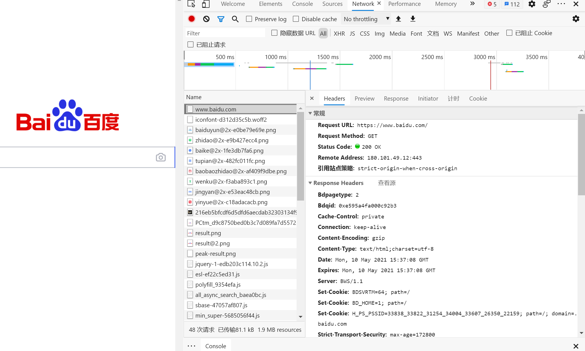

http基本原理
URI和URL
URI （Uniform Resource Identifier） 即统一资源标志符URL （Uniform Resource Locator 即统一资源定位符
例如：https://github.com/favicon.ico既是一个URL，也是一个URI。用URL/URI来唯一指定了它的访问方式，这其中包括了访问协议Https，访问路径（即根目录）和资源名称favicon.ico。
URL是URI的一个子集，也就是每个URL都是URI，但不是每个URI都是URL。
URI还包括一个子类叫做URN（Universal Resource Name）即统一资源名称。但是在目前的互联网，URN的使用非常少，几乎所有的 URI都是URL，所以一般的网页链接我们可以称之为 URL，也可以称之为 URI。
超文本
Hypertext，我们在浏览器里看到的网页就是超文本解析而成的，其网页源代码是一系列 HTML代码，里面包含了一系列标签，比如img显示图片，p指定显示段落等。浏览器解析这些标签后，便形成了我们平常看到的网页，而网页的源代码HTML就可以称作超文本。
HTTP和HTTPS
HTTP的全称是Hyper Text Transfer Protocol，中文名叫作超文本传输协议，HTTP协议是用于从网络传输超文本数据到本地浏览器的传送协议，它能保证高效而准确地传送超文本文档。HTTP由万维网协会（World Wide Web Consortium）和Internet工作小组IETF（Internet EngineeringTask Force）共同合作制定的规范，目前广泛使用的是HTTP 1.1版本。
HTTPS的全称是Hyper Text Transfer Protocol over Secure Socket Layer，是以安全为目标HTTP通道，简单讲是HTTP的安全版，即HTTP下加入SSL层，简称为HTTPS。
HTTPS的安全基础是SSL，因此通过它传输的内容都是经过SSL加密的，它的主要作用可以分为两种：
- 建立一个信息安全通道，来保证数据传输的安全。
- 确认网站的真实性，凡是使用了HTTPS的网站，都可以通过点击浏览器地址栏的锁头标志来查看网站认证之后的真实信息，也可以通过
CA机构颁发的安全签章来查询。
现在越来越多的网站和 App 都已经向 HTTPS 方向发展。例如：
- 苹果公司强制所有 iOS App 在 2017 年 1 月 1 日 前全部改为使用 HTTPS 加密，否则 App 就无法在应用商店上架。
- 谷歌从 2017 年 1 月推出的 Chrome 56 开始，对未进行 HTTPS 加密的网址链接亮出风险提示，即在地址栏的显著位置提醒用户 “此网页不安全”。
- 腾讯微信小程序的官方需求文档要求后台使用 HTTPS 请求进行网络通信，不满足条件的域名和协议无法请求。
因此，HTTPS 已经已经是大势所趋。
HTTP请求过程
我们在浏览器中输入一个URL，回车之后便可以在浏览器中观察到页面内容。实际上，这个过程是浏览器向网站所在的服务器发送了一个请求，网站服务器接收到这个请求后进行处理和解析，然后返回对应的响应，接着传回给浏览器。响应里包含了页面的源代码等内容，浏览器再对其进行解析，便将网页呈现了出来，传输模型如图所示：
此处客户端即代表我们自己的 PC 或手机浏览器，服务器即要访问的网站所在的服务器。
为了更直观地说明这个过程，这里用浏览器的开发者模式下的Network监听组件来做演示，它可以显示访问当前请求网页时发生的所有网络请求和响应。打开浏览器（Chrome或Edge都可以），右击并选择 “检查”项，即可打开浏览器的开发者工具。这里访问百度http://www.baidu.com/，输入该 URL后回车，观察这个过程中发生了怎样的网络请求。可以看到，在Network页面下方 出现了一个个的条目，其中一个条目就代表一次发送请求和接收响应的过程，如图所示:

我们先观察第一个网络请求，即www.baidu.com，其中各列的含义如下。
- 第一列
Name：请求的名称，一般会将 URL的最后一部分内容当作名称。 - 第二列
Status：响应的状态码，这里显示为200，代表响应是正常的。通过状态码，我们可以判断发送了请求之后是否得到了正常的响应。 - 第三列
Type：请求的文档类型。这里为document，代表我们这次请求的是一个 HTML文档，内容就是一些 HTML代码。 - 第四列
Initiator：请求源。用来标记请求是由哪个对象或进程发起的。 - 第五列
Size：从服务器下载的文件和请求的资源大小。如果是从缓存中取得的资源，则该列会显示 fromcache。 - 第六列
Time：发起请求到获取响应所用的总时间。 - 第七列
Waterfall：网络请求的可视化瀑布流。 我们点击这个条目即可看到其更详细的信息，如图所示。

首先是General部分，Request URL为请求的URL，Request Method为请求的方法，Status Code为响应状态码，Remote Address为远程服务器的地址和端口，Referrer Policy为 Referrer判别策略。
再继续往下，可以看到，有Response Headers和Request Headers，这分别代表响应头和请求头。请求头里带有许多请求信息，例如浏览器标识、Cookies、Host等信息，这是请求的一部分，服务器会根据请求头内的信息判断请求是否合法，进而作出对应的响应。图中看到的Response Headers就是响应的一部分，例如其中包含了服务器的类型、文档类型、日期等信息，浏览器接受到响应后，会解析响应内容，进而呈现网页内容。
请求
请求，由客户端向服务端发出，可以分为4部分内容：请求方法（Request Method、请求的网址（Request URL）、请求头（Request Headers）、请求体（Request Body）。
请求方法
常见的请求方法有两种：GET和POST。 在浏览器中直接输入URL并回车，这便发起了一个GET请求，请求的参数会直接包含到URL里。例如，在百度中搜索Python，这就是一个GET请求，链接为https://www.baidu.com/s?wd=Python，其中URL中包 含了请求的参数信息，这里参数wd表示要搜寻的关键字。POST请求大多在表单提交时发起。比如，对于一个登录表单，输入用户名和密码后，点击“登录”按钮，这通常会发起一个POST请求，其数据通常 以表单的形式传输，而不会体现在URL中。
GET和POST请求方法有如下区别。
GET请求中的参数包含在URL里面，数据可以在URL中看到，而POST请求的URL不会包含这些数据，数据都是通过表单形式传输的，会包含在请求体中。GET请求提交的数据最多只有1024字节，而POST请求没有限制。 一般来说，登录时，需要提交用户名和密码，其中包含了敏感信息，使用GET方式请求的话，密码就会暴露在URL里面，造成密码泄露，所以这里最好以POST方式发送。上传文件时，由于文件内容比较大，也会选用POST方式。 我们平常遇到的绝大部分请求都是GET或POST请求，另外还有一些请求方法，如HEAD、PUT、DELETE、OPTIONS、CONNECT、TRACE等，我们简单将其总结为下表。
| 方法 | 描述 |
|---|---|
| GET | 请求页面，并返回页面内容 |
| HEAD | 类似于GET请求，只不过返回的响应中没有具体的内容，用于获取报头 |
| POST | 大多用于表单提交或上传文件，数据包含在请求体中 |
| PUT | 从客户端向服务器传送的数据取代指定文档中的内容 |
| DELETE | 请求服务器删除指定的页面 |
| CONNECT | 把服务器当作跳板，让服务器代替客户端访问其他网页 |
| OPTIONS | 允许客户端查看服务器的性能 |
| TRACE | 回显服务器收到的请求，主要用于测试或诊断 |
请求的网址，即统一资源定位符 URL，它可以唯一确定我们想请求的资源。